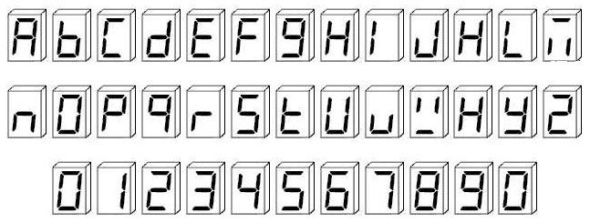

Joint seminar by Almaty Management University and Imagination Technologies
August 23 2016
An example design below, implemented on Terasic DE0-CV board, displays either word 'Almaty' or 'Astana' depending on pressed button 0. Modify the design to output either the first 6 letters of your first name or the letters of your last name, depending on whether a button is pressed
Exercise created by Yuri Panchul